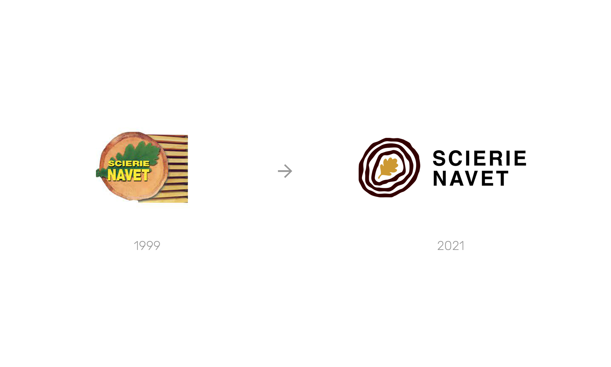
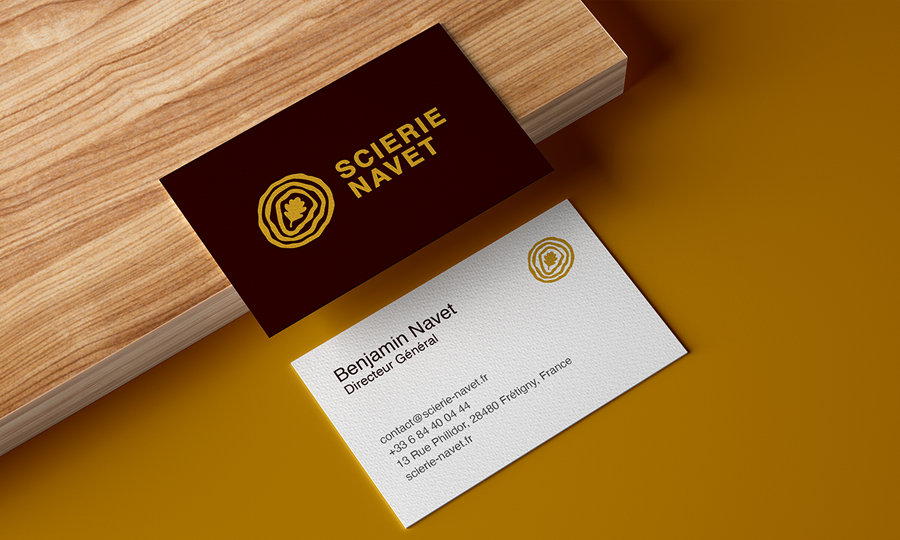
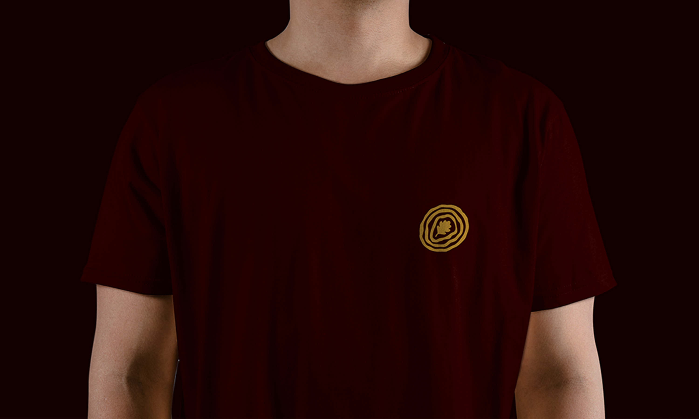

Scierie Navet
Logo Design
A family business
La Scierie Navet is located in the heart of Perche in Frétigny (Eure-et-Loir). A high-tech sawmill, it has evolved over several family generations to offer high-quality wood from sustainably managed oak forests.
Refreshing the logo identity
After being contacted by Benjamin, grandson of the founder and current manager of the sawmill, I had the chance to visit the company in order to immerse myself in the place, to discover its products and to understand the values shared there. The old logo was nearly 20 years old and therefore no longer matched the sawmill's new offerings.
As a specialist in French Oak, mainly from the Grand Ouest region, I wanted to reuse the emblematic symbol of the lobed leaf of the large tree. Centered in the middle of a tree trunk, it gives the impression that the rings emanate from them or perhaps the opposite, that they give birth to it. In short, a minimalist, durable and easily recognizable logo in the wood industry.
Year
November 2021
Lire en Français 🇫🇷